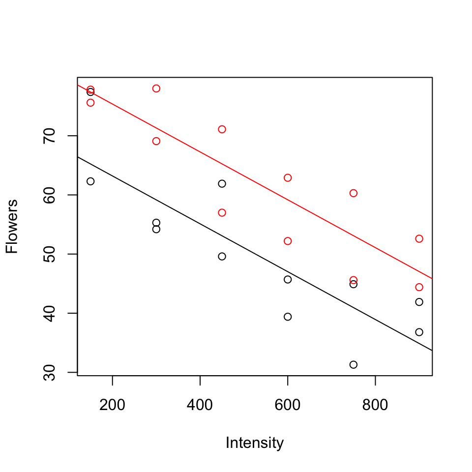
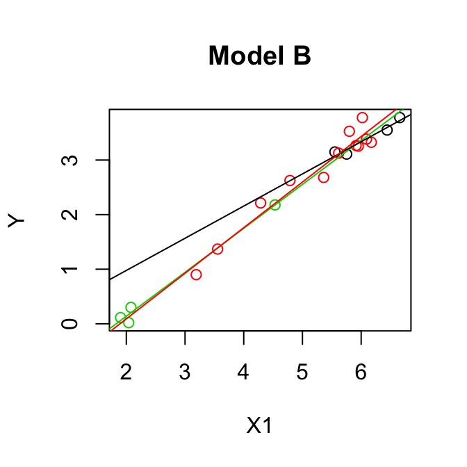

7 Special cases of multiple regression
7.1 Categorical and continuous predictors (binary categories)
7.1.0.1 Example (from Ramsey and Schafer (2002) pg 236, 245):
\(Y\): average number of flowers per plant (meadowfoam).
Light intensity: 150, 300, 450, 600, 750, 900 (\(\mu\) mol/\(m^2\)/sec)
Timing: Timing of onset of light treatment Early/Late. Coded 0/1.
Suppose data is in the table below (every 2nd row) and consider the following models:
Parallel lines model (model A):
\[\mathbb{E}(y)= \beta_0+\beta_1(timing)+ \beta_2 (light)\]
Separate lines model (model B):
\[\mathbb{E}(y)= \beta_0+\beta_1(timing)+ \beta_2 (light) + \beta_3 (timing \times light)\]
- Give the design matrix and the parameter vector for both models
- Test \(H_0: \beta_3 = 0\).
| Flowers | Timing | Time | Intensity |
|---|---|---|---|
| 62.3 | Early | 0 | 150 |
| 77.4 | Early | 0 | 150 |
| 55.3 | Early | 0 | 300 |
| 54.2 | Early | 0 | 300 |
| 49.6 | Early | 0 | 450 |
| 61.9 | Early | 0 | 450 |

Parallel lines model:
\[\mathbb{E}(y)= \beta_0+\beta_1(timing)+ \beta_2 (light)\]
\[\mathbf{X} = \begin{bmatrix} 1 & 0 & 150 \\ 1 & 0 & 300\\ 1 & 0 & 450 \\ 1 & 0 & 600\\ 1 & 0 & 750\\ 1 & 0 & 900\\ 1 & 1 & 150 \\ 1 & 1 & 300\\ 1 & 1 & 450 \\ 1 & 1 & 600 \\ 1 & 1 & 750\\ 1 & 1 & 900 \\ \end{bmatrix}\]
\(\boldsymbol{\beta} = \begin{bmatrix} \beta_0 \\ \beta_1 \\ \beta_2\\ \end{bmatrix}\)
Separate lines model:
\[\mathbb{E}(y)= \beta_0+\beta_1(timing)+ \beta_2 (light) + \beta_3 (timing \times light)\]
\[\mathbf{X} = \begin{bmatrix} 1 & 0 & 150 &0 \\ 1 & 0 & 300 &0 \\ 1 & 0 & 450 &0 \\ 1 & 0 & 600 &0 \\ 1 & 0 & 750 &0 \\ 1 & 0 & 900 &0 \\ 1 & 1 & 150 &150 \\ 1 & 1 & 300 &300 \\ 1 & 1 & 450 &450 \\ 1 & 1 & 600 &600 \\ 1 & 1 & 750 &750 \\ 1 & 1 & 900 &900 \\ \end{bmatrix}\]
\[\boldsymbol{\beta} = \begin{bmatrix} \beta_0 \\ \beta_1 \\ \beta_2\\ \beta_3\\ \end{bmatrix}\]
To test \(H_0: \beta_3 = 0\), P-value = 0.910, so cannot reject \(H_0\) (See table of coefficients, output below).
Model A
Regression Analysis: Flowers versus Time, Intensity
Analysis of Variance
Source DF Seq SS Seq MS F-Value P-Value
Regression 2 3466.7 1733.35 41.78 0.000
Time 1 887.0 886.95 21.38 0.000
Intensity 1 2579.8 2579.75 62.18 0.000
Error 21 871.2 41.49
Lack-of-Fit 9 215.3 23.92 0.44 0.889
Pure Error 12 655.9 54.66
Total 23 4337.9
Model Summary
S R-sq R-sq(adj) R-sq(pred)
6.44107 79.92% 78.00% 73.84%
Coefficients
Term Coef SE Coef T-Value P-Value VIF
Constant 71.31 3.27 21.78 0.000
Time 12.16 2.63 4.62 0.000 1.00
Intensity -0.04047 0.00513 -7.89 0.000 1.00
Regression Equation
Flowers = 71.31 + 12.16 Time - 0.04047 Intensity
Model B
Regression Analysis: Flowers versus Time, Intensity, TxI
Analysis of Variance
Source DF Seq SS Seq MS F-Value P-Value
Regression 3 3467.28 1155.76 26.55 0.000
Time 1 886.95 886.95 20.37 0.000
Intensity 1 2579.75 2579.75 59.26 0.000
TxI 1 0.58 0.58 0.01 0.910
Error 20 870.66 43.53
Lack-of-Fit 8 214.73 26.84 0.49 0.841
Pure Error 12 655.93 54.66
Total 23 4337.94
Model Summary
S R-sq R-sq(adj) R-sq(pred)
6.59795 79.93% 76.92% 70.95%
Coefficients
Term Coef SE Coef T-Value P-Value VIF
Constant 71.62 4.34 16.49 0.000
Time 11.52 6.14 1.88 0.075 5.20
Intensity -0.04108 0.00744 -5.52 0.000 2.00
TxI 0.0012 0.0105 0.12 0.910 6.20
Regression Equation
Flowers = 71.62 + 11.52 Time - 0.04108 Intensity + 0.0012 TxI
Model A:
fit1 <- lm(Flowers ~ Intensity + Time)
summary(fit1)##
## Call:
## lm(formula = Flowers ~ Intensity + Time)
##
## Residuals:
## Min 1Q Median 3Q Max
## -9.652 -4.139 -1.558 5.632 12.165
##
## Coefficients:
## Estimate Std. Error t value Pr(>|t|)
## (Intercept) 71.305833 3.273772 21.781 6.77e-16 ***
## Intensity -0.040471 0.005132 -7.886 1.04e-07 ***
## Time 12.158333 2.629557 4.624 0.000146 ***
## ---
## Signif. codes: 0 '***' 0.001 '**' 0.01 '*' 0.05 '.' 0.1 ' ' 1
##
## Residual standard error: 6.441 on 21 degrees of freedom
## Multiple R-squared: 0.7992, Adjusted R-squared: 0.78
## F-statistic: 41.78 on 2 and 21 DF, p-value: 4.786e-08Model B:
fit2 <- lm(Flowers ~ Intensity * Time)
summary(fit2)##
## Call:
## lm(formula = Flowers ~ Intensity * Time)
##
## Residuals:
## Min 1Q Median 3Q Max
## -9.516 -4.276 -1.422 5.473 11.938
##
## Coefficients:
## Estimate Std. Error t value Pr(>|t|)
## (Intercept) 71.623333 4.343305 16.491 4.14e-13 ***
## Intensity -0.041076 0.007435 -5.525 2.08e-05 ***
## Time 11.523333 6.142360 1.876 0.0753 .
## Intensity:Time 0.001210 0.010515 0.115 0.9096
## ---
## Signif. codes: 0 '***' 0.001 '**' 0.01 '*' 0.05 '.' 0.1 ' ' 1
##
## Residual standard error: 6.598 on 20 degrees of freedom
## Multiple R-squared: 0.7993, Adjusted R-squared: 0.7692
## F-statistic: 26.55 on 3 and 20 DF, p-value: 3.549e-07model.matrix(fit2)## (Intercept) Intensity Time Intensity:Time
## 1 1 150 0 0
## 2 1 150 0 0
## 3 1 300 0 0
## 4 1 300 0 0
## 5 1 450 0 0
## 6 1 450 0 0
## 7 1 600 0 0
## 8 1 600 0 0
## 9 1 750 0 0
## 10 1 750 0 0
## 11 1 900 0 0
## 12 1 900 0 0
## 13 1 150 1 150
## 14 1 150 1 150
## 15 1 300 1 300
## 16 1 300 1 300
## 17 1 450 1 450
## 18 1 450 1 450
## 19 1 600 1 600
## 20 1 600 1 600
## 21 1 750 1 750
## 22 1 750 1 750
## 23 1 900 1 900
## 24 1 900 1 900
## attr(,"assign")
## [1] 0 1 2 3
7.2 Categorical and continuous predictors (more than two categories)
7.2.0.1 Example: (from Ramsey and Schafer (2002)):
\(Y\): Measure of energy
\(X_1\): Measure of weight
Group: Type of flyer (1,2,3). Z1, Z2, Z3 (dummy variables).

Parallel lines model (model A):
\[\mathbb{E}(y)= \beta_0+\beta_1 z_2+ \beta_2 z_3 + \beta_3 x_1\]
Separate lines model (model B): \[\mathbb{E}(y)= \beta_0+\beta_1 z_2+ \beta_2 z_3 + \beta_3 x_1 + \beta_4 x_1 z_2+ \beta_5 x_1 z_3\]
Hypothesis testing:
- Test \(H_0: \beta_4 = \beta_5 = 0\) by comparing the two models using an F-test.
- Test \(H_0: \beta_1 = \beta_2 = 0\) by comparing the parallel lines model to the model \(\mathbb{E}(y)= \beta_0+\beta_3 x_1\) using an F-test.
Give the design matrix and the parameter vector for both models.
Test \(H_0: \beta_4 = \beta_5 = 0\), i.e.
\(H_0:\) Model A is correct
\(H_A:\) Model B is preferable to Model A
\[\begin{align*} F & =\frac{(\mbox{SSE}(A)-\mbox{SSE}(B))/(k-q)}{\mbox{SSE}(B)/(n-p)}\\ & =\frac{(0.5533- 0.5049)/(5-3)}{0.5049/(20-6)}\\ & =\frac{0.0242}{0.0361}\\ & = 0.67.\\ \end{align*}\]\(F_{(2,14)}(0.95) = 3.73 > 0.67\) so we cannot reject \(H_0\), model A is OK.
- Test \(H_0: \beta_1 = \beta_2 = 0\), i.e. let model C = one group model:
\[\mathbb{E}(y)= \beta_0+ \beta_3 x_1 \]
\(H_0:\) Model C is correct
\(H_A:\) Model A is preferable to Model C
\[\begin{align*} F & =\frac{(\mbox{SSE}(C)-\mbox{SSE}(A))/(k-q)}{\mbox{SSE}(A)/(n-p)}\\ & =\frac{\mbox{SSR}(A|C)/(3-1)}{0.5533/(20-4)}\\ & =\frac{(0.0008+0.0288)/(3-1)}{0.5533/(20-4)}\\ & =\frac{0.0296/2}{0.0346}\\ & = 0.43\\ \end{align*}\]We don’t need to see the fit for Model C, take Seq SS.
\(F_{(2,16)}(0.95) = 3.63 > 0.43\) so we cannot reject \(H_0\), model C is adequate.
OUTPUT: Model A
Regression Analysis: y versus x1, Z2, Z3
Analysis of Variance
Source DF Seq SS Seq MS F-Value P-Value
Regression 3 29.4215 9.8072 283.59 0.000
x1 1 29.3919 29.3919 849.91 0.000
Z2 1 0.0288 0.0288 0.83 0.375
Z3 1 0.0008 0.0008 0.02 0.883
Error 16 0.5533 0.0346
Total 19 29.9748
Model Summary
S R-sq R-sq(adj) R-sq(pred)
0.185963 98.15% 97.81% 97.30%
Coefficients
Term Coef SE Coef T-Value P-Value VIF
Constant -1.498 0.150 -9.99 0.000
x1 0.8150 0.0445 18.30 0.000 2.58
Z2 -0.079 0.203 -0.39 0.703 3.80
Z3 0.024 0.158 0.15 0.883 3.45
Regression Equation
y = -1.498 +0.8150x1 -0.079Z2 +0.024Z3
OUTPUT: Model B
Regression Analysis: y versus x1, Z2, Z3, Z2*x1, Z3*x1
Analysis of Variance
Source DF Seq SS Seq MS F-Value P-Value
Regression 5 29.4699 5.8940 163.44 0.000
x1 1 29.3919 29.3919 815.04 0.000
Z2 1 0.0288 0.0288 0.80 0.387
Z3 1 0.0008 0.0008 0.02 0.886
Z2*x1 1 0.0452 0.0452 1.25 0.282
Z3*x1 1 0.0032 0.0032 0.09 0.770
Error 14 0.5049 0.0361
Total 19 29.9748
Model Summary
S R-sq R-sq(adj) R-sq(pred)
0.189900 98.32% 97.71% 96.29%
Coefficients
Term Coef SE Coef T-Value P-Value VIF
Constant -1.471 0.248 -5.94 0.000
x1 0.8047 0.0867 9.28 0.000 9.37
Z2 1.27 1.29 0.99 0.341 146.62
Z3 -0.110 0.385 -0.29 0.779 19.70
Z2*x1 -0.215 0.224 -0.96 0.353 166.38
Z3*x1 0.031 0.103 0.30 0.770 41.94
Regression Equation
y = -1.471 +0.8047 x1 +1.27 Z2 -0.110 Z3-
- 0.215Z2 x1 +0.031Z3 x1
x1G <- flying.data$x1 * flying.data$G1
x2G <- flying.data$x1 * flying.data$G2
fitA <- lm(y ~ x1 + G1 + G2, data = flying.data)
summary(fitA)##
## Call:
## lm(formula = y ~ x1 + G1 + G2, data = flying.data)
##
## Residuals:
## Min 1Q Median 3Q Max
## -0.23224 -0.12199 -0.03637 0.12574 0.34457
##
## Coefficients:
## Estimate Std. Error t value Pr(>|t|)
## (Intercept) -1.49770 0.14987 -9.993 2.77e-08 ***
## x1 0.81496 0.04454 18.297 3.76e-12 ***
## G1 -0.07866 0.20268 -0.388 0.703
## G2 0.02360 0.15760 0.150 0.883
## ---
## Signif. codes: 0 '***' 0.001 '**' 0.01 '*' 0.05 '.' 0.1 ' ' 1
##
## Residual standard error: 0.186 on 16 degrees of freedom
## Multiple R-squared: 0.9815, Adjusted R-squared: 0.9781
## F-statistic: 283.6 on 3 and 16 DF, p-value: 4.464e-14anova(fitA)## Analysis of Variance Table
##
## Response: y
## Df Sum Sq Mean Sq F value Pr(>F)
## x1 1 29.3919 29.3919 849.9108 2.691e-15 ***
## G1 1 0.0288 0.0288 0.8327 0.3750
## G2 1 0.0008 0.0008 0.0224 0.8828
## Residuals 16 0.5533 0.0346
## ---
## Signif. codes: 0 '***' 0.001 '**' 0.01 '*' 0.05 '.' 0.1 ' ' 1fitB <- lm(y ~ x1 + G1 + G2 + x1G + x2G, data = flying.data)
summary(fitB)##
## Call:
## lm(formula = y ~ x1 + G1 + G2 + x1G + x2G, data = flying.data)
##
## Residuals:
## Min 1Q Median 3Q Max
## -0.25152 -0.12643 -0.00954 0.08124 0.32840
##
## Coefficients:
## Estimate Std. Error t value Pr(>|t|)
## (Intercept) -1.47052 0.24767 -5.937 3.63e-05 ***
## x1 0.80466 0.08668 9.283 2.33e-07 ***
## G1 1.26807 1.28542 0.987 0.341
## G2 -0.11032 0.38474 -0.287 0.779
## x1G -0.21487 0.22362 -0.961 0.353
## x2G 0.03071 0.10283 0.299 0.770
## ---
## Signif. codes: 0 '***' 0.001 '**' 0.01 '*' 0.05 '.' 0.1 ' ' 1
##
## Residual standard error: 0.1899 on 14 degrees of freedom
## Multiple R-squared: 0.9832, Adjusted R-squared: 0.9771
## F-statistic: 163.4 on 5 and 14 DF, p-value: 6.696e-12anova(fitB)## Analysis of Variance Table
##
## Response: y
## Df Sum Sq Mean Sq F value Pr(>F)
## x1 1 29.3919 29.3919 815.0383 8.265e-14 ***
## G1 1 0.0288 0.0288 0.7986 0.3866
## G2 1 0.0008 0.0008 0.0215 0.8855
## x1G 1 0.0452 0.0452 1.2543 0.2816
## x2G 1 0.0032 0.0032 0.0892 0.7696
## Residuals 14 0.5049 0.0361
## ---
## Signif. codes: 0 '***' 0.001 '**' 0.01 '*' 0.05 '.' 0.1 ' ' 1anova(fitA, fitB)## Analysis of Variance Table
##
## Model 1: y ~ x1 + G1 + G2
## Model 2: y ~ x1 + G1 + G2 + x1G + x2G
## Res.Df RSS Df Sum of Sq F Pr(>F)
## 1 16 0.55332
## 2 14 0.50487 2 0.04845 0.6718 0.5265fitC <- lm(y ~ x1, data = flying.data)
#summary(fitC)
#anova(fitC)

7.3 Quadratic terms and interactions
Example from Ramsey and Schafer (2002) pg 252. The data on corn yields and rainfall are in `RainfallData.csv’, or library(Sleuth3) in ‘ex0915’. Variables:
- Yield: corn yield (bushels/acre)
- Rainfall: rainfall (inches/year)
- Year: year.
7.4 An example with two continuous and two categorical predictors
FEV data - for a full description see http://ww2.amstat.org/publications/jse/v13n2/datasets.kahn.html.
Response variable: fev (forced expiratory volume) measures respiratory function.
Predictors: age, height, gender and smoke.
The dataset is in library(covreg).
References
Ramsey, Fred, and Daniel Schafer. 2002. The Statistical Sleuth: A Course in Methods of Data Analysis. 2nd ed. Duxbury Press.